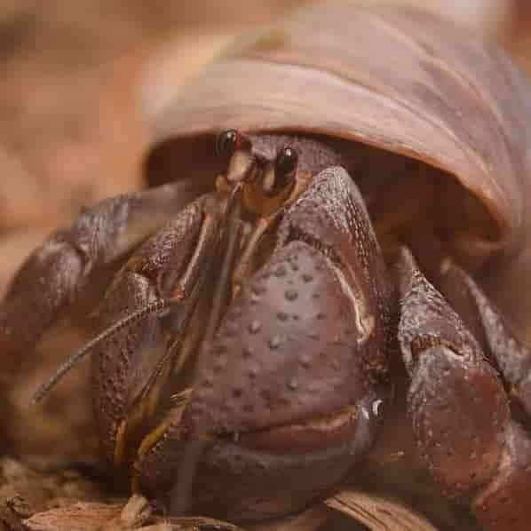
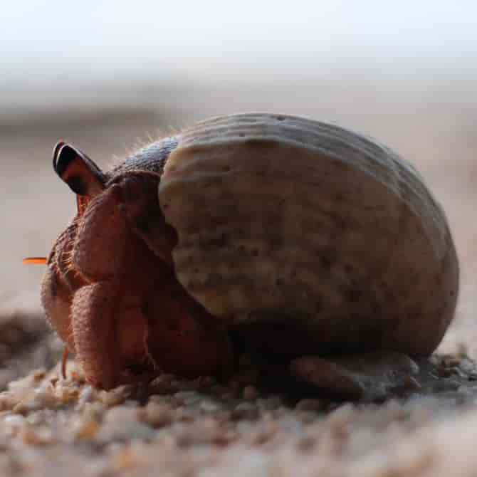

Overview: Hermit crabs are surprisingly very high-maintenance pets that are very sensitive to their environments which require very specific temperatures and humidity levels that can be difficult to execute without the proper equipment and knowledge. There are many misconceptions surrounding hermit crabs and it's very rare to find a hermit crab in a pet store in a good, suitable environment that educates the buyer on their ideal living conditions. More often than not, misinformed hermit crab owners have poor experiences with their hermit crabs not living very long. Hermit crabs are pets that experienced pet owners should consider having if they are willing to put in a lot of time and effort into maintaining proper terrarium environments for their crabs. Hermit crabs, when treated with proper care, are long-term animals that can live for up to 20 years. A dedicated and consistent owner who doesn't mind having multiple crabs would be ideal for hermit crabs.
 Diet & Living Spaces: hermit crab's diet should consist of high-quality commercial hermit crab food, fresh vegetables, and fruit or peanut butter as treats. They should also have a shallow water bowl with fresh water available at all times, including a bowl of saltwater to bathe themselves. The ideal environment for a hermit crab would be in a very large, warm, humid tank with at least 6 inches of moistened substrate mixture with other hermit crab companions. Hermit crabs are very social animals and must be accompanied by other crabs in order to live a happy life. The terrarium must be sprayed with water at least three times daily in order to keep the environment moist and humid. Climbing walls, toys, and hideaways should be scattered throughout the terrarium to encourage exercise as well. Their terrarium should also have at least 3 natural empty shells for every hermit crab in the tank of various sizes so that when the crabs molt and outgrow their old shell they can find a new shell fit into it instead of outgrowing their old shell and being uncomfortable.
Common Health Issues: One of the most common health problems for hermit crabs is respiratory problems. It's not as much of a health problem as it is an owner's lack of knowledge on the matter. More often than not, many hermit crab owners are misinformed about hermit crabs and their living conditions and they are unfortunately placed in very dangerous environments where they are slowly suffocating because the humidity levels are not high enough for them to breathe through their gills easily. This can be combatted by providing a tank humidifier and heater and by spraying the tank multiple times a day with a sprayer filled with fresh water. This animal requires a lot of time and attention in order to get their living environments just right. It's important to keep this in mind if you or someone you know is interested in keeping a hermit crab as a pet.